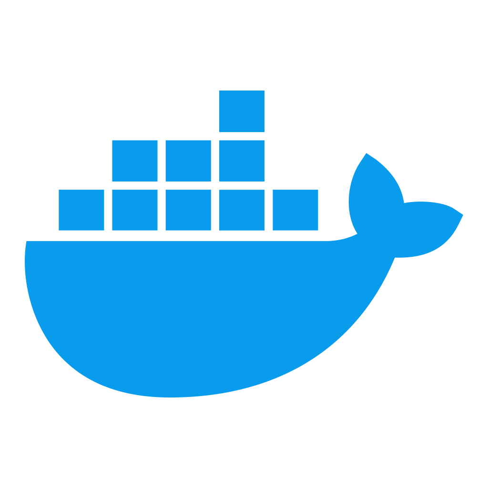

Mastering DevOps with Manoj
 Docker
Containerize applications and manage images, containers, networks, and volumes with Docker.
Read Docker Docs → Kubernetes
Kubernetes
Deploy and manage containerized applications at scale with Kubernetes clusters.
Read Kubernetes Docs → Terraform
Terraform
Define and provision infrastructure using Infrastructure as Code across cloud providers.
Read Terraform Docs → Git
Git
Version control for source code using branches, merges, remotes, and Git workflows.
Read Git Docs →Tomcat
Deploy and manage Java-based web applications using Apache Tomcat.
Read Tomcat Docs → Nginx
Nginx
Serve static files, reverse proxy, and load balance applications with Nginx.
Read Nginx Docs → Jenkins
Jenkins
Automate CI/CD pipelines using Jenkins and integrate with version control tools.
Read Jenkins Docs → MySQL
MySQL
Set up and manage relational databases, users, and queries using MySQL.
Read MySQL Docs → PostgreSQL
PostgreSQL
Use PostgreSQL for advanced SQL queries, schemas, and enterprise-grade databases.
Read PostgreSQL Docs → MongoDB
MongoDB
Handle unstructured JSON-like data with MongoDB NoSQL database.
Read MongoDB Docs → Linux
Linux
Master common Linux commands, shell scripting, permissions, services, and cron.
Read Linux Docs → Python
Python
Use Python for scripting, automation, and API integrations in DevOps pipelines.
Read Python Docs →Bash
Automate tasks and write shell scripts using Bash for Unix-based systems.
Read Bash Docs → Grafana
Grafana
Visualize metrics, logs, and alerts from multiple data sources using Grafana dashboards.
Read Grafana Docs →SSL
Deploy and manage SSL certificates using Certbot, including DNS and HTTP validation.
Read SSL Docs →